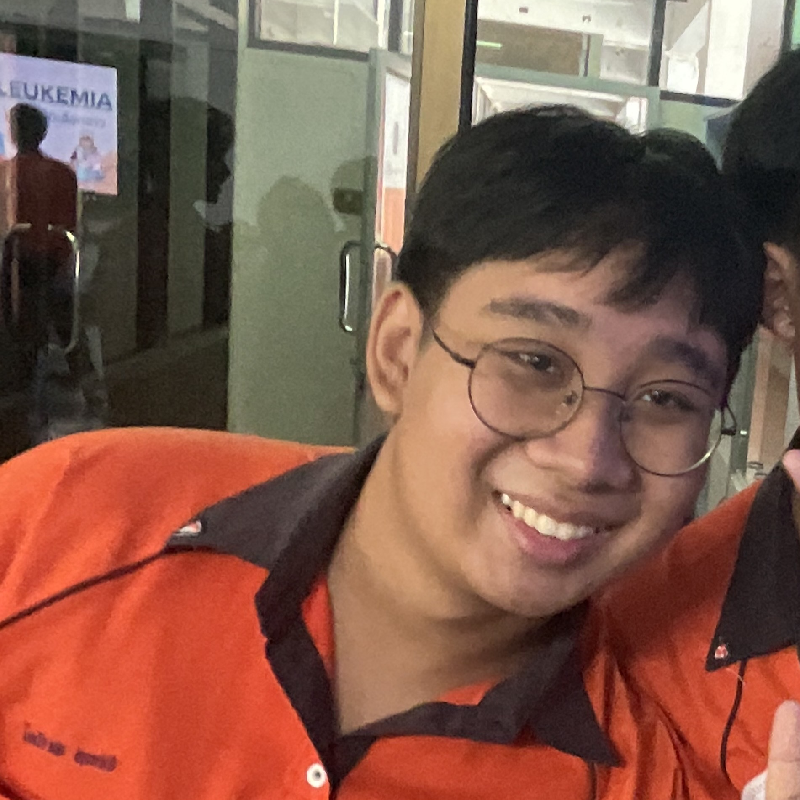

@ ไอซ์ ชญานนท์
- ฝึกฝนทักษะการสื่อสารภาษาอังกฤษและภาษาญี่ปุ่น
- ฝึกความมั่นใจในตนเอง การกล้าแสดงออก และการนำเสนองาน
ฝึกงาน/โปรเจค : อยากศึกษาและเก็บเกี่ยวประสบการณ์เกี่ยวกับงานในแผนกต่างๆของบริษัทให้เพียงพอ เพื่อให้ตรงกับความต้องการก่อนตัดสินใจเข้าทำงาน

ฝึกงาน/โปรเจค : อยากฝึกงานในบริษัทสายไอทีที่มีชื่อเสียง ในตำแหน่งงานใดก็ได้ที่เกี่ยวกับ Tech
@ ไก้ ธัชกฤช
- อยากพัฒนา Soft skills ให้ดียิ่งขึ้นในด้านทักษะการสื่อสาร
- อยากศึกษาเพิ่มเติมในด้าน Cyber security เพื่อใช้ในการทำงาน
ฝึกงาน/โปรเจค : อยากฝึกงานในบริษัทสายไอทีที่มีชื่อเสียง ในตำแหน่งงานใดก็ได้ที่เกี่ยวกับ Tech

@ บิว พัชรพล
- อยากพัฒนาทักษะด้านการสื่อสารและการนำเสนองาน
- พัฒนาทักษะด้านภาษาอังกฤษ
- ศึกษาเรื่องการลงทุนเพิ่มเติม
ฝึกงาน/โปรเจค : อยากฝึกงานในบริษัทที่สามารถมอบประสบการณ์ ทักษะการทำงาน และความรู้ได้เป็นอย่างดี
@ มิค ปุณพจน์
- อยากมีความรู้ในการเขียนโปรแกรมได้หลายภาษาเพื่อใช้ในการสมัครงาน
- ฝึกฝนทักษะการสื่อสารภาษาอังกฤษสำหรับการทำงานให้คล่องแคล่ว
- ฝึกฝนความมั่นใจ ความกล้าแสดงออก
ฝึกงาน/โปรเจค : สามารถฝึกงานกับบริษัทใดก็ได้ เพื่อสั่งสมประสบการณ์และค้นหาเส้นทางที่ตนเองถนัด

@ ไอ๊ พิชฎา
- พัฒนาทักษะด้านการสื่อสาร การนำเสนองาน และ Soft skills อื่นๆ
- พัฒนาทักษะภาษาที่สาม เช่น ญี่ปุ่น เกาหลี
ฝึกงาน/โปรเจค : อยากฝึกงานในบริษัทสาย Tech ที่มีสภาพแวดล้อมและสังคมในที่ทำงานที่เหมาะสมกับตนเอง

@ เม เมธาวี
- พัฒนาทักษะการสื่อสาร การถ่ายทอดและการนำเสนองานให้มีความถูกต้องและน่าสนใจ
- ศึกษาภาษาที่ใช้ในการเขียนโปรแกรมให้หลากหลาย และรู้ถึงจุดแข็ง-จุดอ่อนของภาษาต่างๆเพื่อความเหมาะสมในการใช้งาน
ฝึกงาน/โปรเจค : อยากฝึกงานในบริษัทใดก็ได้ โดยคำนึงถึงความเหมาะสมในด้านการเดินทางเป็นหลัก

@ อุ้งอิ้ง มินท์ธิตา
- พัฒนาทักษะการเขียนและพัฒนาโปรแกรมให้เพียงพอต่อการทำงาน
- ใช้ภาษาอังกฤษได้อย่างคล่องแคล่ว พร้อมพัฒนาทักษะภาษาที่สาม เช่น จีน ญี่ปุ่น เกาหลี
- พัฒนา Soft skills เช่น การบริหารเวลา ความสามารถในการปรับตัว การมีทัศนคติที่ดีและแนวคิดที่ยืดหยุ่น
ฝึกงาน/โปรเจค : อยากลองฝึกงานในสาย Tech หลายๆตำแหน่ง เพื่อค้นหางานที่เหมาะสมกับความสามารถตนเอง ทั้งยังพึงพอใจกับเนื้องานและลักษณะการทำงาน